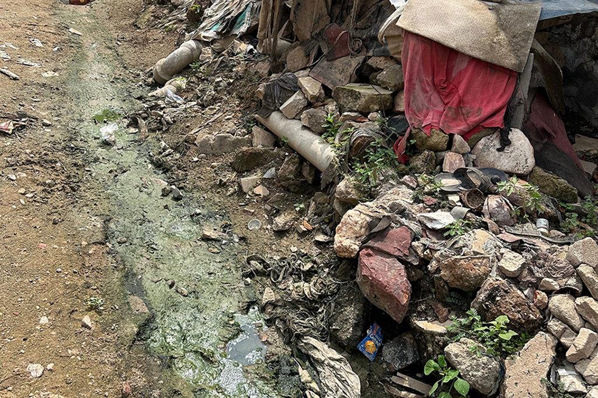

Understanding Neglected Tropical Diseases

Neglected tropical diseases (NTDs) silently afflict millions around the world, with Ghana facing a particularly severe burden. These diseases, often overlooked in global health conversations, disproportionately impact vulnerable populations, exacerbating existing health inequities. By understanding the hidden burden of NTDs in Ghana, we can shed light on their significant role in perpetuating poverty and limiting access to essential health services. Exploring the impact of neglected tropical diseases on health equity in Ghana is crucial for developing effective interventions and policies.
Addressing these diseases requires a focused approach that not only treats the infections but also seeks to empower affected communities. As we delve into the connection between NTDs and health inequity, we will highlight innovative strategies to combat these ailments and promote health equity in Ghana. By tackling the root causes and fostering collaboration among stakeholders, we can forge a path towards a healthier future for all, ensuring that no one is left behind in the fight against neglected tropical diseases.
The Hidden Burden of Neglected Tropical Diseases in Ghana
Neglected tropical diseases (NTDs) pose a significant yet often overlooked challenge to public health in Ghana. These diseases, which include schistosomiasis, lymphatic filariasis, and trachoma, affect millions of people across the country, particularly in rural and underserved communities. The prevalence of NTDs remains high due to factors such as poor sanitation, lack of access to clean water, and inadequate healthcare infrastructure. Many individuals suffer in silence, facing debilitating symptoms that hinder their ability to work, attend school, and live fulfilling lives. This hidden burden not only impacts individual health but also places a strain on the wider healthcare system and economic stability.
Moreover, the limited awareness surrounding NTDs further complicates efforts to combat their spread. Many Ghanaians are unaware of the risks associated with these diseases and the preventive measures that can be taken. Government initiatives and health education campaigns must prioritize the visibility of NTDs to galvanize community engagement and action. Addressing the hidden burden of neglected tropical diseases involves not only improving treatment availability but also fostering a broader understanding of these illnesses. By bringing NTDs into the public conversation, Ghana can work towards reducing their prevalence and improving overall health outcomes for affected populations.
How Neglected Tropical Diseases Exacerbate Health Inequities
Neglected tropical diseases (NTDs) disproportionately affect marginalized communities in Ghana, compounding existing health inequities. Many of these diseases thrive in impoverished areas where access to clean water, sanitation, and healthcare services is limited. Communities suffering from poverty and under-resourced healthcare systems often lack the necessary knowledge and resources to prevent and treat these diseases. This vicious cycle not only hinders the overall health of affected populations but also limits their socio-economic opportunities, perpetuating a cycle of poverty and ill health.
The impact of NTDs extends beyond individual health challenges; they destabilize entire communities and impede national development. Families drained financially by medical expenses related to NTDs face further barriers to economic stability. Additionally, NTDs can stymie educational attainment, as affected individuals miss school or struggle to concentrate due to illness. As Ghana strives for health equity, understanding the intricate relationship between NTDs and socio-economic status is essential for developing targeted interventions. By addressing these inequities, Ghana can improve health outcomes and foster sustainable development for all its citizens.
Promoting Health Equity: Strategies to Combat Neglected Tropical Diseases in Ghana
To effectively combat neglected tropical diseases (NTDs) in Ghana, a multi-faceted approach that emphasizes community engagement and education is essential. Health authorities can strengthen awareness campaigns, targeting at-risk populations in rural areas where NTDs are most prevalent. By collaborating with local leaders and community health workers, these campaigns can foster trust and encourage people to seek treatment. Additionally, integrating NTD prevention strategies into existing health programs can maximize resource utilization and reach underserved communities more efficiently. For instance, training healthcare workers to identify and manage NTDs can dramatically improve diagnosis rates and lead to more timely interventions.
Furthermore, addressing the social determinants of health is crucial in promoting health equity. This includes improving access to clean water, sanitation, and adequate healthcare facilities, which are vital in reducing the incidence of NTDs. Implementing targeted interventions, such as mass drug administration and vector control measures, can significantly reduce the burden of these diseases. Collaborations with non-governmental organizations and international health bodies can amplify efforts, bringing in additional resources and expertise. By prioritizing strategies that address both NTDs and broader health inequities, Ghana can take significant strides toward promoting health equity for all its citizens.